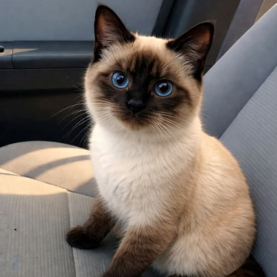

O gato Siamês é famoso por seus olhos azuis intensos e sua pelagem clara com extremidades mais escuras. É uma raça muito comunicativa, ativa e apegada aos donos.
Os siameses gostam de atenção e costumam miar bastante para interagir com as pessoas. Além disso, são gatos curiosos e adoram brincar e explorar a casa.